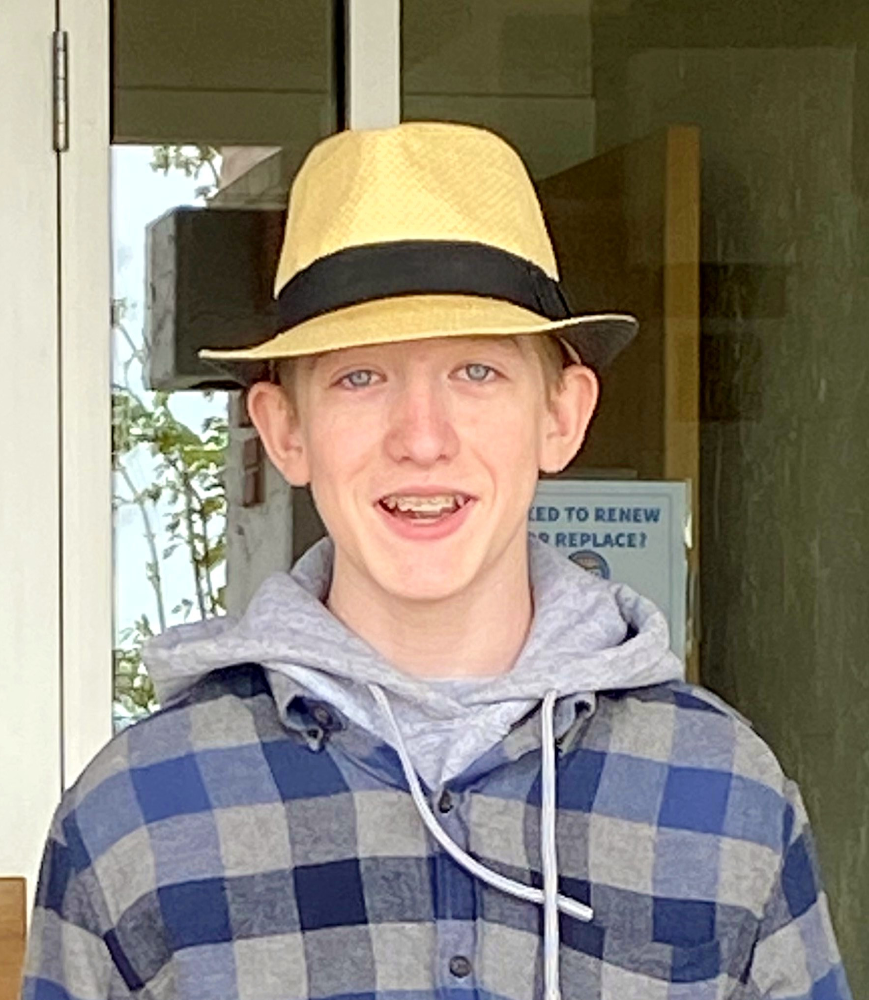

Carsten Brooks


The Measure of Intelligence is the ability to change.Albert Einstein
Humor is the good natured side of a truth.Mark Twain
The Measure of Intelligence is the ability to change.Albert Einstein
Humor is the good natured side of a truth.Mark Twain